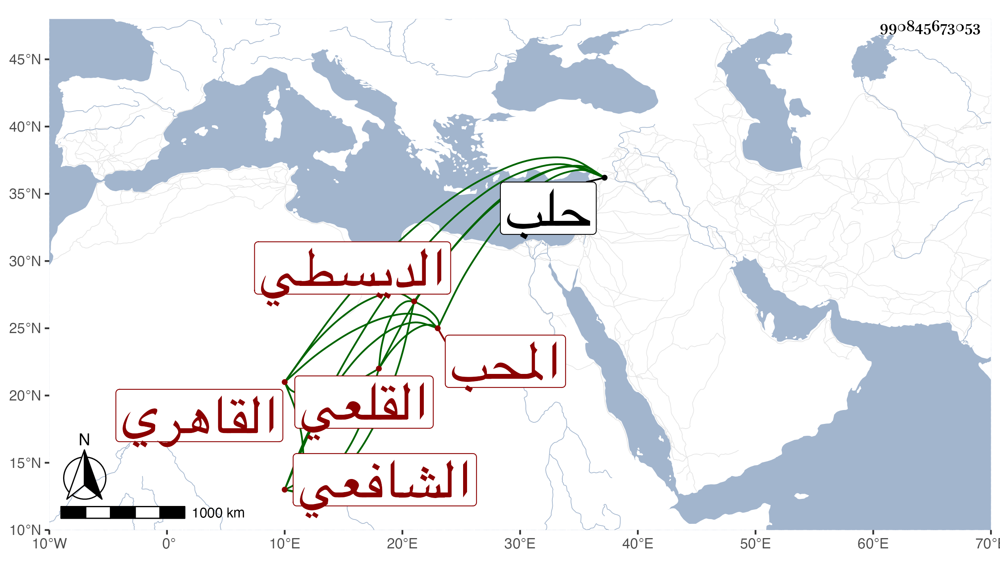

0902Sakhawi.DawLamic.ITO20230111-ara1.EIS1600.990845673053
Biography ID: 990845673053
597
محمد بن محمد بن محمد بن علي بن عبيد بن شعيب المحب الديسطي الأصل القاهري القلعي الشافعي الماضي أبوه ويعرف بالقلعي. ممن اشتغل عند الجوجري ولازمه ثم زكريا وكذا أخذ عن الكمال بن أبي شريف وعبد الرحيم الأبناسي في آخرين وسمع مني المسلسل وغيره بل سمعه مع سنن أبي داود والخصال المكفرة من الزكي أبي بكر المناوي وقطعة من المستخرج على مسلم لأبي نعيم على الشمس الملتوتي والعمدة وأربعي النووي على الديمي واختص بالخطيب الوزيري لمصاهرة بينهما فهو زوج لأخب زوجته وكأنه قرأ عليه وبمحمود بن الشمس بن أجا ولعل بسفارته استقر في نيابة خزن كتب المؤيدية . ومات عنده بحلب إذ توجه إليها صحبة ماميه في المحرم سنة سبع وتسعين عن إحدى وأربعين ، وقد حج وجاور وهو ذو عقل وتودد وتميز ممن كثر التأسف على فقده ، وبلغني أنه كان ينظم رحمه الله وإيانا وعوضه الجنة .
